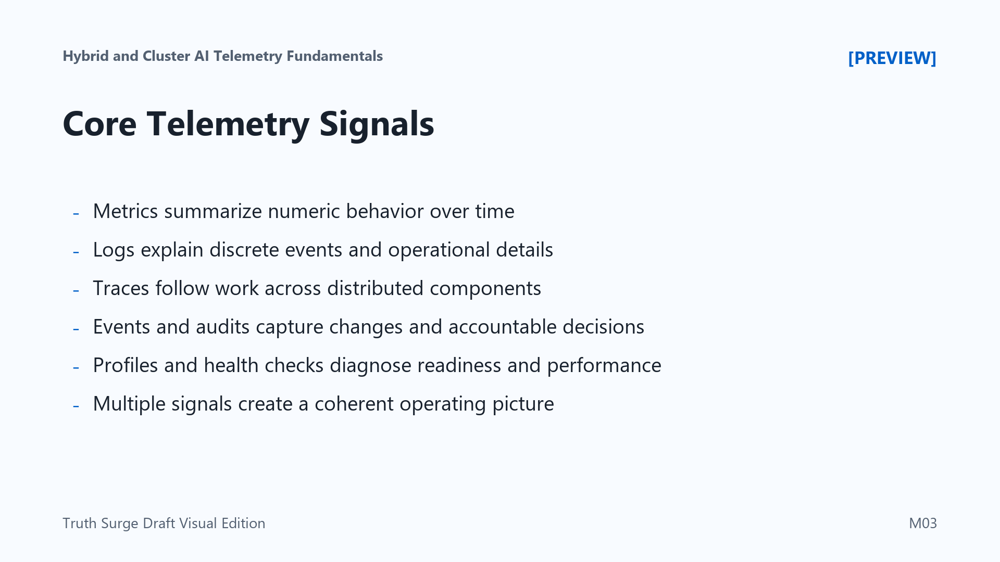

Core Telemetry Signals
Connecting to LMS... Progress: in progress

Narration
Telemetry signals answer different operational questions. Metrics summarize numeric behavior over time. They are useful for latency, error rate, throughput, request volume, queue depth, GPU utilization, memory pressure, and similar trends. Metrics are compact and easy to alert on, but they usually do not explain the full story by themselves.
Logs record discrete events and details. A log entry can explain that a route selected a model version, a retrieval call timed out, a pipeline job skipped a source, or an administrative change occurred. Logs are valuable during investigation, but they need structure and data discipline. They should provide useful context without turning sensitive request content into permanent records.
Traces connect work across services. In a distributed AI workflow, a trace can show that a request moved from an API gateway to an inference service, then to retrieval, storage, and a downstream service. Traces help teams distinguish time spent in application logic from time spent waiting on dependencies, scheduling, or network calls.
Events and audit records capture important state changes, policy decisions, administrative actions, and security-relevant activity. Profiles and health checks add another view by showing performance characteristics and readiness. No single signal is enough. A useful operating picture combines metrics for trends, logs for detail, traces for flow, events for change, audits for accountability, and health checks for current state.